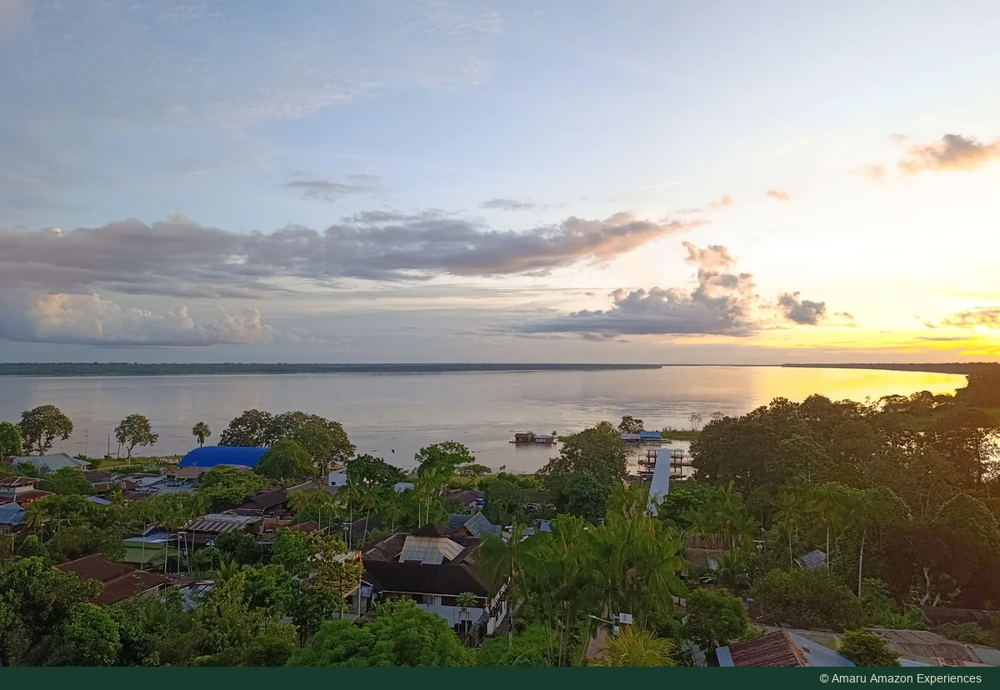

Puerto Nariño · Amazonía colombiana
Avistamiento nocturno de caimanes
Una salida en embarcación para buscar caimanes y descubrir el río después del atardecer.
Consultar con Amaru por WhatsApp ↗
Sobre esta experiencia
Explora el entorno fluvial de noche con un guía local, buscando caimanes desde una embarcación sin manipular ni perseguir fauna. Es una salida distinta de la caminata nocturna por el bosque. La exigencia suele ser baja, pero se necesita movilidad y equilibrio para subir y bajar, permanecer sentado según las indicaciones y adaptarse a la oscuridad y los insectos. No se garantizan avistamientos.
Las aguas del Amazonas son hábitat y también camino. Buscar fauna de noche requiere paciencia y respeto: deja que el guía conduzca la observación y que los animales se desplacen libremente. Una salida tranquila por el río tiene valor aunque una especie concreta no aparezca.
Fuentes del contexto del destino: Ramsar ↗
Qué explorar
- Observación nocturna desde una embarcación
- Experiencia independiente de la caminata nocturna
- Exigencia baja, con requisitos de embarque y equilibrio
Antes de salir
- Momento del día
- NOCTURNO
- Duración
- Confirma con Amaru la duración y el punto de encuentro para tus fechas.
- Exigencia física
- Exigencia baja
Los niveles son orientativos. El terreno, el agua, el clima y las características del grupo pueden cambiar la exigencia.
Consulta el embarque, la ruta y las condiciones nocturnas antes de salir. Sigue las indicaciones desde tu asiento, protege tus pertenencias del agua y deja espacio a la fauna. Pregunta qué iluminación y equipo de seguridad figuran en tu propuesta.
¿Qué debo confirmar?
Pregunta por la ruta, la salida, los requisitos del grupo, el idioma del guía, el equipo, los traslados y los servicios incluidos. Comparte tus fechas y número de viajeros, y revisa el precio total y las condiciones de cancelación antes de confirmar.
Las rutas dependen del nivel del agua, el clima y las condiciones locales. Los avistamientos de fauna no se pueden garantizar.
AMARU AMAZON EXPERIENCES
Experiencias de nuestros viajeros
¿Viajaste con Amaru? Comparte tu experiencia para ayudar a otros viajeros.
Escribir una opinión
Revisamos todas las opiniones antes de publicarlas. Las críticas legítimas son bienvenidas; nunca cambiamos el texto ni las estrellas.
Copia el ID y el código antes de cerrar o recargar esta página.
El envío web aún no está disponible. Puedes contactar con Amaru por correo. Contactar por correo ↗
Eliminar mi opinión
Contactar por correo ↗AMARU AMAZON EXPERIENCES
Planea esta experiencia
Elige esta experiencia por separado o conversemos sobre cómo integrarla a tu viaje. Una consulta no confirma una reserva y esta web no recibe pagos.
Consultar con Amaru por WhatsApp ↗